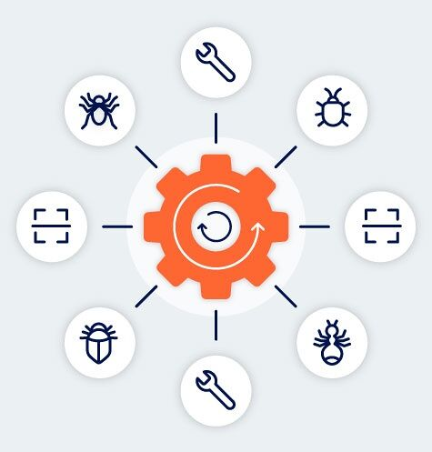

Penetration testing software from PortSwigger
Revolutionize your workflow - with the leading penetration testing software.Find more vulnerabilities faster with software built by pentesters, for pentesters
As a pentester, you're always looking for ways to improve your workflow. Through research and continual development, PortSwigger delivers the most powerful toolkit on the market. It's packed with features and extensions - with the world's leading web vulnerability scanner at its core.Burp Suite Professional acts as a force multiplier for your testing. Join the leading community of penetration testers using Burp Suite to work smarter, not harder.
“With Burp Suite Pro, I am able to much more efficiently perform web and mobile application pen testing, having almost every feature I need within one product, including automation with scanning, Intruder, etc. that other tools don't provide as well.”
Source: Tony DeLaGrange, Penetration Tester - TechValidate survey of PortSwigger customersRevolutionize your pentesting
Make your work faster, easier, and more reliable. Harness 15 years of product innovation and the pioneering work of PortSwigger Research, when you use Burp Suite Professional.Propel your processes
Improve and accelerate your testing workflows with 200+ extensions, faster brute-forcing and fuzzing, and deeper manual testing.Stay ahead of the game
Develop your pentesting skills by using Burp Suite to test your abilities in the Web Security Academy. Free learning materials from world-class experts.Work with the very best
Tap the collective knowledge of tens of thousands of Burp Suite users. Overcome challenges, find new vulnerabilities, and develop alongside the PortSwigger community.Use Burp to help you work towards achieving compliance with
many requirements, such as PCI DSS, HIPAA, and GDPR.
PortSwigger software is trusted by over 16,000 organizations worldwide